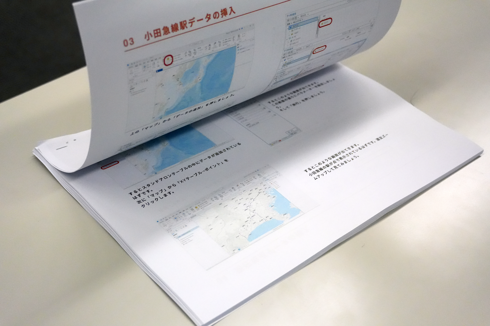

2025年12月13日に開催されたネットワーク情報学部のプロジェクト最終発表会にて、 学部3年生がプロジェクトの研究成果を発表しました。
中山プロジェクトの発表
中山プロジェクトでは、「Tangible GIS」をテーマに研究を進めてきました。 物理的な模型とデジタル技術を融合させ、直感的に操作できるGISプラットフォームの開発に取り組みました。

発表会では、多くの来場者に対してシステムの概要や技術的な仕組みについて説明を行いました。 学生たちは1年間の研究成果を丁寧に解説し、質問にも的確に対応していました。

来場者には実際にシステムを操作していただき、物理模型を動かすことで リアルタイムにデジタル情報が更新される様子を体験してもらいました。

また、開発したツールの制作方法をまとめたカタログも展示しました。 技術的な詳細や制作プロセスを可視化することで、 他の研究者や学生が同様のシステムを構築する際の参考となることを目指しています。
最終発表会について
3年次の必修科目「プロジェクト」は専修大学ネットワーク情報学部のカリキュラムの中心に据えられているグループワーク型の演習科目です。 教員や学生が立案した研究テーマごとにチームを組み、1年間かけて共同で研究や開発を行い、その成果を発表します。